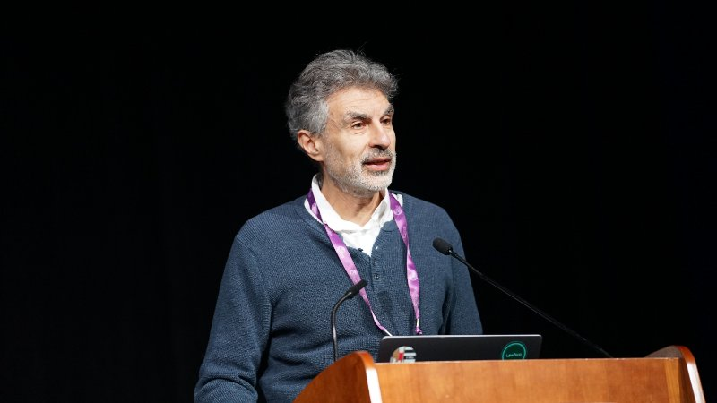

![NTK]()

Yoshua Bengio Turned Down the Race He Helped Start. Bengio is one of three researchers who won the 2018 Turing Award for laying the groundwork for the deep learning systems now inside every major chatbot, which makes his next move harder to dismiss as an outsider's complaint. He founded LawZero, a Montreal nonprofit built to develop AI systems designed for safety rather than speed, and this week Canada and Germany agreed to fund it with grants totaling up to $300 million (Globe and Mail via Techmeme). The number matters less as an amount than as a signal of who's willing to write the check. OpenAI and Google DeepMind measure their compute budgets in the billions and their timelines in product launches. Two national governments just told Bengio his slower, non-commercial approach was worth funding anyway.
That decision didn't happen in a vacuum. Bengio has spent the past several months arguing publicly that the entire framework governments use to regulate AI is about to break, the same way public health guidance broke in 2020 when the virus stopped matching the models (The Guardian). His comparison to COVID-19 isn't decoration. It's a claim about timing: that regulators who wait for consensus before acting will find, as public health officials did, that the moment for orderly rulemaking closes fast and doesn't reopen. Governments spent 2020 improvising policy in real time because they hadn't built the infrastructure to move faster. Bengio's argument is that AI regulation is running the same clock, and that LawZero's funding is one of the only concrete moves so far to build capacity before the emergency arrives rather than after.
Whether that bet pays off depends on something the funding announcement can't settle: whether a nonprofit lab, however credentialed its founder, can produce systems anyone actually adopts once the commercial labs have a two-year head start. Bengio built his name proving an idea before the industry believed in it once already. Canada and Germany just paid for him to try again, on a deadline he says is shorter than anyone in power currently admits.
The next question is who else writes a check, and to whom.
Other Governments Will Face the Same Bet Within Weeks, and Most Will Pass. Bengio's COVID framing was aimed past Ottawa and Berlin. It was aimed at Washington, London, Brussels and Tokyo, all of which now have to explain why they didn't move first. The most likely outcome over the next two weeks is not that other capitals match the funding. It's that they issue statements agreeing with Bengio's premise while committing nothing, the same posture health ministries took in early 2020 when they acknowledged a problem without yet building the capacity to act on it. Watch for the UK's AI Safety Institute and the EU's AI Office, both of which have existing infrastructure to fund exactly this kind of independent lab, to praise the LawZero grant publicly without announcing comparable money of their own. The U.S. is the least likely mover of all. An administration focused on winning the commercial AI race has little incentive to fund a lab explicitly built to slow that race down, which means LawZero's most natural funding partners for now are other middle powers hedging the same way Canada and Germany just did, not the countries actually hosting the labs Bengio is worried about.
That mismatch sets up the more immediate pressure point.
Bengio Will Have to Show Something Working Before the Two-Year Head Start Becomes Permanent. Money bought LawZero time, not results, and the commercial labs aren't pausing to watch. The most likely next 12 months look like this: OpenAI, Google DeepMind and Anthropic keep shipping, each release making Bengio's slower approach look more like a museum piece unless LawZero produces something concrete soon. The realistic near-term deliverable isn't a competing chatbot. It's a technical paper or safety framework specific enough that at least one commercial lab or government regulator adopts a piece of it, the way academic cryptography research gets absorbed into products without anyone renaming the product after the professor. If that adoption doesn't happen within the funding cycle, expect the same governments now praising Bengio to quietly redirect future money toward regulation of the existing labs instead of alternatives to them, since regulating what already exists is politically easier than funding a competitor that isn't gaining users. Germany's coalition government, already under budget pressure heading into 2027, is the most likely of the two funders to face domestic questions first about whether this was research funding or a symbolic gesture.
Two doors just opened at once, and walking through the first one is what makes the second one visible.
A Middle-Power Bloc Forms Around LawZero, and It Looks Nothing Like a Coalition. Canada and Germany didn't just fund a lab. They created a template any government can copy without building new institutions first, since LawZero already exists, already has Bengio's name attached, and already has a governance structure that isn't Beijing's or Washington's. That's new. A month ago there was no vehicle for a country like South Korea or the Netherlands to hedge on AI safety without either picking a side in the U.S.-China race or standing up its own research infrastructure from scratch. Now there's one lab, already funded, already credentialed, that any finance ministry can write a check to and call it done. The Probabilities section already named the likely first movers, the UK's AI Safety Institute and the EU's AI Office, as the ones most likely to praise the grant and fund nothing. But praise is itself a resource. If three or four more governments issue statements this fall backing LawZero's model even without matching money, Bengio gains something Canada and Germany's cash alone can't buy him: a claim that his approach has multilateral legitimacy, which is the exact currency he'd need if he ever wants a seat at a regulatory table controlled by countries that didn't write checks.
That legitimacy only matters if it gets tested against something concrete, which is the second door.
A Regulator Uses LawZero's Work as the First Independent Benchmark for a Commercial Lab's Safety Claims. This is the room that only becomes visible once the coalition in the first possibility actually forms. Right now, when OpenAI or Google DeepMind says a model is safe, the main check on that claim is internal, the lab grading its own homework. LawZero's entire premise is that safety research can happen outside the companies with a product to protect. If even one of the governments now publicly aligned with Bengio's framing, the EU's AI Office is the likeliest candidate given its existing statutory authority, decides to cite LawZero's methodology in an actual enforcement action or licensing review, that's the first time an independent, non-commercial lab's work would carry regulatory weight rather than just moral weight. It would also hand Bengio the concrete adoption the Probabilities section said he needs before his funding cycle ends, but it wouldn't be the paper-into-product pathway that section described. It would be faster and more adversarial: a regulator using outside research to say no to a company, not a company borrowing outside research to ship faster.
The generative version of this door is the one worth watching for. If that first citation happens and holds up in court or in compliance, it doesn't just validate LawZero. It gives every other middle power in the new coalition a reason to fund not just safety research, but safety research explicitly designed to be regulator-usable, which is a different, harder, and more durable thing to build than a lab that simply publishes papers and hopes someone reads them.
The money and the warning are already public. What gets said about both, by people with something to protect, is the part worth watching closely.
"This Is Just Bengio Trying to Stay Relevant After Missing the Product Race." Executives at rival labs, none willing to be named in the reporting so far, have floated versions of this line to explain away the LawZero funding and the regulatory warning together. The claim does two jobs at once. It recasts a Turing Award winner's public argument about regulatory timing as sour grapes from someone who didn't build a chatbot, and it recasts $300 million in government funding as a consolation prize rather than a policy choice. The people most likely to repeat it are inside the commercial labs whose head start Bengio has spent months describing as a closing window, which means the same executives dismissing him as irrelevant are also the ones with the clearest incentive to make sure nobody takes his COVID comparison seriously until the window is fully shut. Nothing in either article supports the claim that LawZero was a fallback. Bengio didn't apply for compute and get turned down. He built a nonprofit specifically structured to not compete on product speed, and two governments funded that structure on its own terms. Calling that a consolation prize only works if you ignore that the entire point of LawZero was never to ship first. It's a category error dressed up as an insult, and it's a useful one for anyone who'd rather the public debate be about Bengio's ego than about whether regulators are actually out of time.
The tell is what the claim conveniently skips. Nobody making it has offered a competing account of why Canada and Germany, two governments with no obvious reason to flatter a Canadian academic, decided this particular moment was worth $300 million of public money. A comparison to how tobacco and fossil fuel interests once funded doubt about their own regulators, not by disproving the science but by discrediting the scientist, does the explanatory work here in one line. The mechanism is the same: you don't need to win the argument if you can make the person making it look like they have something to gain. Bengio does have something to gain, in the ordinary sense that anyone attached to a $300 million grant has something to gain. But the claim isn't designed to weigh that interest against the argument. It's designed to replace the argument with the interest, so nobody has to answer the actual question Bengio put on the table: what happens to the countries that wait for consensus before they act.